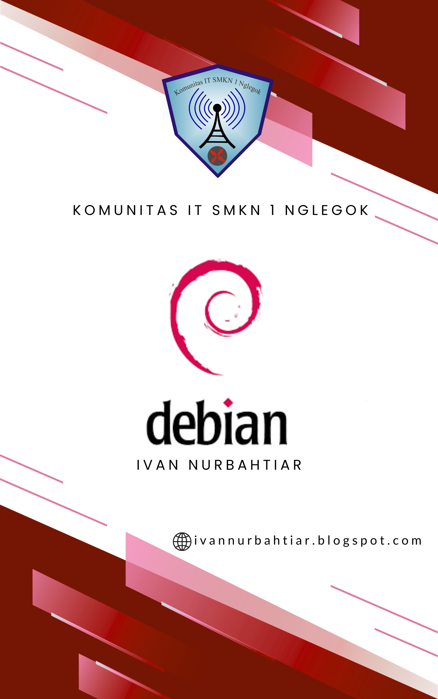

Project
Selama bergabung di KITS, saya berkesempatan untuk membuat dan menyusun beberapa modul pembelajaran internal
yang digunakan oleh anggota KITS lainnya sebagai bahan latihan dan referensi. Pembuatan modul ini melatih saya
untuk memahami materi secara lebih mendalam, serta meningkatkan kemampuan komunikasi teknis dan penyusunan dokumen.
Berikut tiga modul yang telah saya buat:
- 1. Modul MTCNA (MikroTik Certified Network Associate)
Berisi dasar-dasar konfigurasi MikroTik, termasuk routing, firewall, DHCP, dan bandwidth management. Modul ini dibuat untuk membantu anggota baru memahami konsep jaringan MikroTik secara praktis. - 2. Modul Debian Server
Mencakup instalasi, konfigurasi jaringan, DHCP, DNS, dan web server menggunakan sistem operasi Debian. Fokus utamanya adalah penerapan layanan jaringan berbasis Linux di lingkungan lokal. - 3. Modul CCNA (Cisco Certified Network Associate)
Berisi dasar teori dan praktik konfigurasi jaringan menggunakan Cisco Packet Tracer, seperti routing OSPF, VLAN, dan subnetting. Modul ini membantu anggota memahami konsep jaringan berbasis Cisco.
